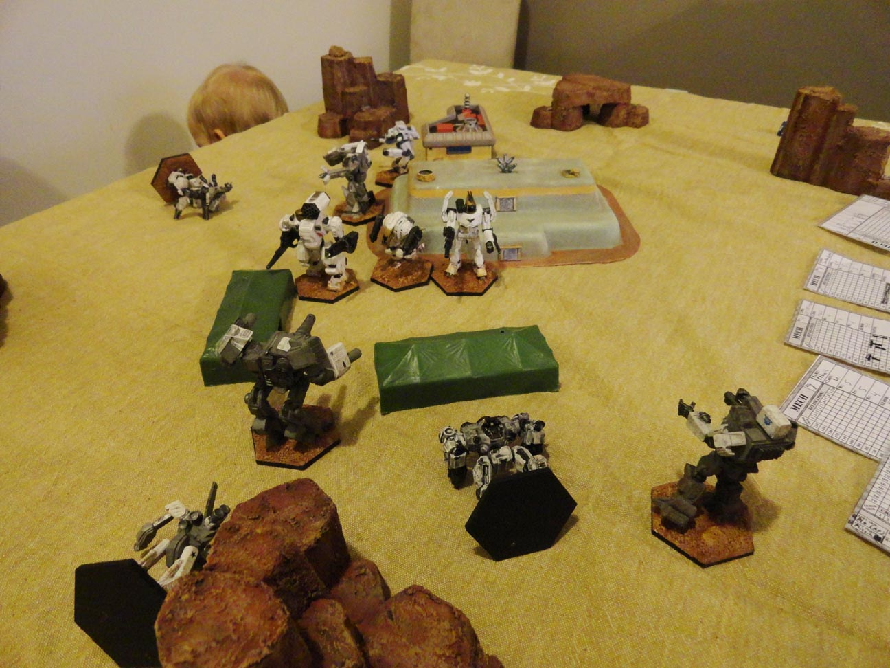

Build armies with the points shown in the unit catalog. Pay per base, including every member of a squad.
Every unit uses the same formula. There are no hand-set prices, faction discounts, or rarity premiums. These are starting costs for playtesting, not established balance.
Dial weighting


Points reflect every click, with more weight given to earlier clicks. A unit that keeps its weapons, armor, or speed through damage costs more than one that loses them early.
The formula prices each click as a complete profile, from Start to the last click before destruction. Its defense protects the weapons and movement on that same click. This avoids letting tough but weak late clicks inflate the value of powerful early weapons.
Earlier clicks count more because their strengths are available sooner. The weight falls evenly from 1.5 at Start to 0.5 at the last click. For a six-click dial, the weights are 1.5, 1.3, 1.1, 0.9, 0.7, and 0.5. The weights average 1. A one-click dial uses 1.
Here are three otherwise identical six-click vehicles. All have speed 6, attack 8, defense 18, and a single Ballistic weapon with a 0–12-inch range and a 180° arc. They have no colored equipment. Only the damage values change:
| Damage from Start to the last click | Pattern | Points |
|---|---|---|
| 3, 3, 3, 3, 3, 3 | Holds its strength | 55 |
| 3, 3, 2, 2, 1, 1 | Gradual decline | 43 |
| 3, 1, 1, 1, 1, 1 | Sharp early drop | 34 |
Order also matters. A damage track of 3, 3, 1, 1, 1, 1 costs 39 points; 3, 1, 1, 1, 1, 3 costs 36. They have the same starting damage and average, but the first keeps its strength through the next hit. These are pricing examples, not additional catalog units.
The formula
Each click contributes: 1.6 × Click weight × Toughness × (1 + Mobility + 3 × Firepower + Support)
Add every click’s contribution, then add the pilot allowance. Round once to the nearest whole point, with a minimum of 1. All ratings below are calculated on that click.
| Part | What it measures |
|---|---|
| Toughness | Resistance to incoming damage, using that click’s defense, armor, and cover |
| Mobility | Speed, Jump Jets, safe disengagement, scouting, deployment, and hover movement |
| Firepower | Expected damage, using attack, weapons, range, arcs, equipment, infantry limits, heat, and readiness |
| Support | Repair, command, cooling, disruption, capture, and protection of nearby allies |
| Pilot allowance | 6 points already included in each ’Mech’s cost; no extra charge for choosing its Revived pilot |
Each datasheet has a “How the points are calculated” section with a profile-value chart, each click’s contribution, and the total. Profile value is a pricing estimate, not another stat used during play. Choosing a later click on the datasheet does not change the model’s purchase cost.
How the ratings work
Toughness compares a click with a defense-18 target under an attack-8, damage-3 hit. The test mix is 80% ranged attacks, split equally among B/E/R, and 20% close attacks. For infantry, terrain is 50% open, 35% woods, and 15% fieldworks. Other units use 50% open and 50% woods. Infantry get +3 ranged defense in woods and +4 ranged/+2 close in fieldworks; battle armor gets +2 and +3/+1 respectively. Equipment applies separately. These terrain shares estimate access to cover across a game, rather than assuming infantry always occupy their best position.
Mobility adds 0.08 per inch of speed. Jump Jets adds 0.45 and safe disengagement from blue or red speed adds 0.15 while mobile. Reconnaissance adds 0.16. Infiltrate adds 0.6 only to the starting click; later appearances have no deployment value. Hover adds 0.05. Camouflage and Evade's protection count under Toughness, not movement. These ratings are pricing allowances, not extra inches during play.
Firepower checks all 216 dice results, including white-dice criticals. Its target mix is 25% Armor-1 vehicles, 15% Armor-2 vehicles, 20% unarmored ’Mechs, 10% open infantry, 15% infantry in woods with +3 cover, and 15% battle armor in the open. It weighs stationary fire at 65% and moving fire at 35%. Recoil, Energy heat, Rocket restrictions, damage limits, and Piercing all apply. Fieldworks improve infantry's Toughness estimate; the offensive mix does not include them.
Range adds 0.025 per maximum-range inch and subtracts 0.025 per minimum-range inch. Vehicles and infantry add half-speed Advance reach, rounded up. ’Mechs compare Advance, Move then Fire, Advance then Fire, Fire then Advance, two Advances, and Fire then Move. Each shot uses its own reach and recoil. Jump Jets does not add distance. Wider arcs get a small bonus. Indirect access, including Streak Missiles, adds 15% of its expected damage. Close attacks use a 0.4 reach allowance, split between front and rear attacks. The best attack counts fully; a different second choice adds 15% for flexibility.
For ’Mechs, a 24-activation calculation chooses one action, two actions, or a whole activation spent Venting, using the actual heat track and vent rating. Move and Fire have 0 base heat; Advance has 1; a second action adds 1. Each action reads its current heat modifiers before attacking, then gains heat. Shutdown prevents a second action. Heat modifiers and a small stress allowance adjust output. The model preserves printed heat bonuses as well as penalties.
Pulse, Rapid Strike, and PPC Capacitor include their extra heat; the calculator can decline an optional ability if ordinary fire performs better. Alpha Strike goes straight to shutdown after one attack. Rockets have no moving-fire option. Rush still moves at most twice speed and uses the whole activation, so the basic mobility allowance is unchanged.
Equipment costs
Equipment is valued on the clicks where it appears, using its weapon-specific identity. Strong protection raises the value of that click's offense and mobility too. There is no blanket surcharge for a colored square: Salvage removes all Firepower, rather than adding a bonus.
| Equipment | How it enters the formula |
|---|---|
| Armor, Decoy, Camouflage, Evade, Agility | Expected incoming damage, including armor grades, defense bonuses, and Agility's final close-damage limit |
| Electronic Camouflage | Treat 5% of incoming Ballistic and 15% of Rocket attacks as blocked guided/indirect opportunities |
| Anti-missile system | Its own damage reduction in Toughness; 0.2 Support for protecting allies |
| Armor Piercing, Improved Targeting, Artemis V, Brawling | Their actual damage or accuracy effects |
| Pulse and Rapid Strike | First-hit chance multiplied by the second attack's expected damage; extra heat applies |
| Hand-to-Hand Weapon | Mean of all six replacement damage results, choosing it only when better than printed damage |
| Anti-Personnel and Full Strike | An estimated extra target on 25% and 35% of opportunities, respectively |
| Repair / Command / Coolant Flush / Bypass | 0.6 / 0.4 / 0.45 / 0.15 Support; Bypass needs positive attack |
| Homing Beacon / TSEMP / Flamer heat / Grapple | 0.25 / 0.25 / 0.2 / 0.1 Support while usable |
| Point Defense | 0.3 Support per 2 printed defense above 16; no allowance at 16 or below |
For ’Mechs, active Repair, Coolant Flush, Bypass, Homing Beacon, TSEMP, and Flamer allowances also use their heat-limited action rate. Command and passive protection do not gain a second-action multiplier. Support and extra-target rates are shared estimates of opportunity, not guaranteed damage or extra actions. Duplicate systems on one unit do not stack their Support allowance. Playtests should record actual use before changing these common weights.
Death from Above adds an attack allowance only on non-Salvage ’Mech clicks with blue speed, positive speed and attack, and positive primary damage. It uses the same target mix and equal front/rear weighting, with no DFA against infantry. Expected damage includes +2 target defense, +2 primary damage, legal equipment, criticals, and armor, without Rapid Strike or Full Strike. Subtract expected landing damage—1 on a hit or 2 on a miss—and count no negative result. Value each self-damage click as one enemy damage click for this estimate. Multiply by the heat output factor for a 2-heat action (plus 1 if second), reach of 0.4 + 0.025 × speed, and 0.25 availability. Add this as an occasional attack option, since it requires an unengaged start.
For vehicles and infantry, a separate 24-action calculation chooses between attacking and recovering. A first attack commits the unit. A second attacks at its current values, then pushes it one click down its actual combat dial. Spent units must recover, and destruction ends their output. Salvage cannot attack or push through to another click. The calculation can recover early to preserve a good click. It starts Ready at each click in turn and uses the result per action to price that click.
Some dials improve after taking damage. To price a particular click, this readiness estimate caps later attacks at that click’s firepower. Later improvements still add value on their own clicks; they are not also charged to earlier, weaker ones. This is a pricing convention and does not limit attacks during play.
Datasheets show firepower before readiness, a readiness multiplier, and the firepower used in the price. These summary ratings are weighted by click weight and toughness, matching the contributions above. This estimates sustained output; the multiplier is not a fixed discount. ’Mechs use heat instead. Both models use 24 activations, but neither predicts a whole battle.
Special cases
- A Rocket test substitute uses the alternate cost on its datasheet. Record that cost before deployment and keep it for the return game.
- Carriers use the allowance for the chosen game size. Designation adds no separate charge in this version.
- Aircraft, artillery-only units, DropShip turrets, and other excluded types still get catalog costs. Those estimates use the same model, but do not make them legal in a core game. Special flight, artillery, and DropShip rules are not priced here.
- Repair stops, exact base size, pivoting, heat-related movement loss, mission layouts, squad coordination, and pilot combinations are not fully modeled. Support uses allowances rather than simulating captures, linked activations, or an army's need for repair and cooling. Extra attacks assume the target survives and retains its reference defense; heat schedules conservatively charge the second-roll heat on each use. Readiness excludes enemy attacks, repairs, and critical-miss self-damage. DFA subtracts landing damage but not lost future output or critical-miss self-damage; its availability allowance estimates the difficulty of finding legal landings. The heat model prices repeated attack choices, not every mixed-weapon or support sequence. Click weights express an early-strength preference, not measured survival odds.
Changing costs
The calculator is units/points.py, with shared transitions in readiness.py; all tuning weights are in points-config.json. Change the formula version when changing weights, then rebuild the catalog, cards, and sample armies together. Keep one formula version for both games in a test pair.
Record reasons for changes in the adjustment log. Prefer a shared formula correction over a special price for one unit.
The force builder always uses current catalog costs, including when it opens an older saved list. Review its total after an update and generate fresh cards. Keep an exported list and its cards if you need to finish a test pair under an older formula.